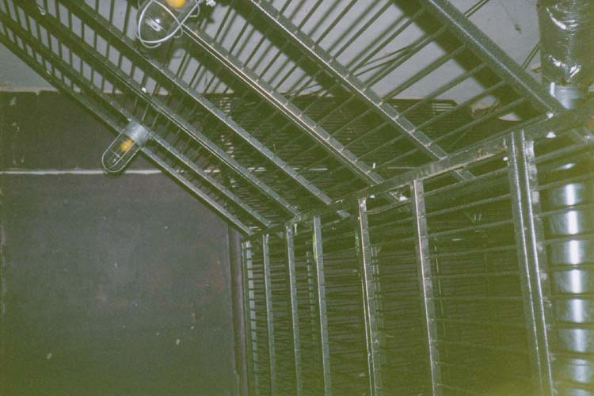
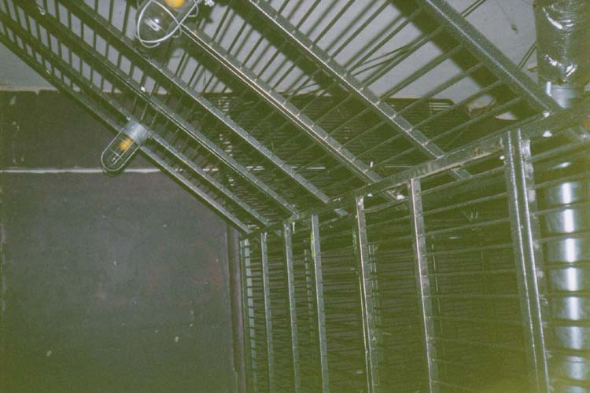

Moving upward through the House of Nightmares from the basement level is like travelling backward through time. Each chapter of the building's history is represented by the artifacts left behind here.
First of all is the basement, which is one of the coolest things I've ever come across in a neglected building. When I explored the defunct Fantasy Farm in Lesourdsville Lake, Ohio, my friend Rookie and I discovered the tunnels where they had once conducted their annual haunted house. This time, Hoss, Jesus, my girlfriend, and I wandered the halls of a far more recent haunted attraction. The most impressive part was that all the stuff was still there.
My girlfriend and I remembered most of this, but navigating it backwards in the dark with only our flashlights made it tricky. It was laid out like a maze, with corridors which sent you past corrals where the actors would come to life and chase you toward the next thing. There were plenty of sound effects and weird lighting when we had been here before. Now there were only props and paintings on the walls, but that was more than enough to keep us nervous at every turn.
Maybe the scariest thing was the presence of the dummies they use in the haunted house. Every time we came around a corner we'd jump at the sight of someone sitting in a corner, only to realize that it was just a stuffed dummy or a mannequin.
At one point Hoss disappeared from our group. We knew he would be waiting somewhere in the haunted house, but not where. After a few minutes he jumped out and scared the living shit out of all three of us. Good fun.
After wandering backwards through the entire off-season House of Nightmares haunted house, we found a staircase and headed up. Click the picture below to continue to the upper floors.


 
